MATHS:: Lecture 02 :: Analytical Geometry

Analytical geometry
Introduction
The branch of mathematics where algebraic methods are employed for solving problems in geometry is known as analytical geometry. It is sometimes called Cartesian Geometry.
Let X’OX and Y’OY be two perpendicular straight lines intersecting at the point O.
The fixed point O is called origin. The horizontal line X’OX is known as X –axis and the vertical line Y’OY be Y-axis. These two axes divide the entire plane into four parts known as Quadrants.
| Basic Geometry Definitions Part 1 | Basic Geometry Definitions Part 2 |
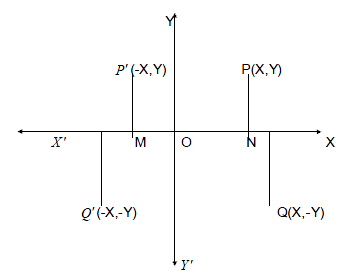
All the values right of the origin along the X-axis are positive and all the values left of the origin along the X- axis are negative. Similarly all the values above the origin along Y – axis are positive and below the origin are negative.
Let P be any point in the plane. Draw PN perpendicular to X –axis. ON and PN are called X and Y co-ordinates of P respectively and is written as P (X,Y). In particular the origin O has co-ordinates (0,0) and any point on the X-axis has its Y co-ordinate as zero and any point on the Y-axis has its X-co-ordinates as zero.
Straight lines
A straight line is the minimum distance between any two points.
| Introduction to angles | Coordinate Geometry Slope of a Line |
The slope of the line is the tangent of the angle made by the line with positive direction of X – axis measured in the anticlockwise direction. 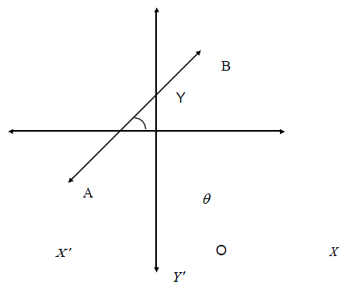
let the line AB makes an angle with the positive direction of X-axis as in the figure.
The angle  is called the angle of inclination and tan
is called the angle of inclination and tan is slope of the line or gradient of the line. The slope of the line is denoted by m. i.e., slope = m = tan
is slope of the line or gradient of the line. The slope of the line is denoted by m. i.e., slope = m = tan 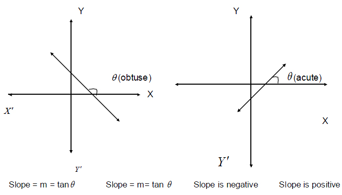
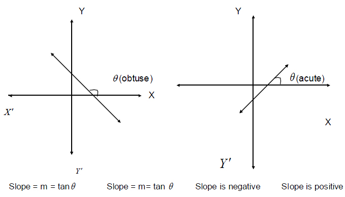
Note
- The slope of any line parallel to X axis is zero.
- Slope of any line parallel to Y axis is infinity
- The slope of the line joining two points (x1,y1) and (x2,y2) is
Slope = m = tan = 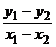
= 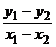
- When two or more lines are parallel then their slopes are equal
- When two lines are perpendicular then the product of their slopes is –1
i.e., m1m2 = -1
Equation of a straight line
There are several forms of a straight line. They are,
1. Slope – intercept form
Let the given line meet y-axis at B (o, c). We call OB as Y – intercept. Let A be any point on the given line. Draw AM perpendicular to OX and BD AM. Let this line make an angle q with X axis. Then the slope
,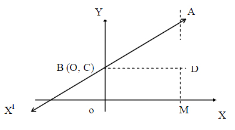
Note:
- Any line passing through the origin does not cut y – axis (c = 0) i.e., y – intercept is zero. Therefore its equation is y = mx
(ii) Any line which is parallel to x – axis has slope equal to zero. Therefore its equation is y = c (Because m = 0)
(iii) Any line perpendicular to x-axis, ie which is parallel to y-axis at a distance of K units from the origin is given by x = k.
Application of Corresponding Parts of Congruent Triangles
(i) Slope is four and y intercept is –3
(ii) Inclination is 300 and y intercept is 5
Solution: (i) Slope (m) = 4
Y intercept (c) = -3
Equation of a line is y = mx + c
Y = 4x – 3
Equation of a line is 4x – y – 3 = 0
(ii) = 300 , y intercept = 5
Slope = tan
m = tan 300 =
Equation of a line is y = mx + c
Y = x + 5
y = x + 5
Equation of a line is x -y +5
Example 2: Calculate the slope and y intercept of the line 2x – 3y + 1= 0
Solution: 2x – 3y + 1 = 0
3y = 2x + 1
y = +
Comparing with y = mx + c, we get
m = , c =
Slope = ; y intercept =
2. Slope – one point form
Let the line AB make an angle q with x- axis as shown in the figure and pass through the point P (x1, y1). If (x, y) represents a point other than the point (x1, y1), then m = 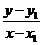 where m is the slope of the line or y – y1 = m (x – x1)
.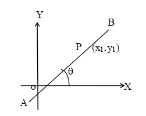
Hence the equation of a line passing through a point (x1, y1) and having slope ‘m’ is y – y1 = m (x – x1).
Example: Find the equation of a straight line passing through (-4,5) and having slope -
Solution: Slope = -
Point (-4,5)
Equation of the line is (y-y1) = m(x-x1)
y – 5 = - (x+4)
(x+4)
3y – 15 = -2x –8
\Equation of a line is 2x + 3y – 7 = 0
3. Two points form
Let P (x1, y1) and Q (x2, y2) be any two points on the given line AB. We know, the slope, m = 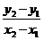.
We have the slope-point form of a line as
y – y1 = m (x – x1).
Substituting the value of m in the above equation we get
,
y – y1 = (x – x1).
ie  =
= 
Hence, the equation of a line passing through two points is given by
 =
= 
Example: Find the equation of the straight line passing through the points (3,6) and (-2,5).
Solution : Equation of the line is 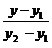= 
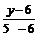 =
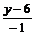 =
5y – 30 = x – 3
x – 5y –3 + 30 = 0
Equation of the line is x – 5y +27 = 0
4. Intercept form
Let AB represent the given line which intersects X – axis at A (a, 0) and Y- axis at B (0, b). We call OA and OB respectively as x and y intercepts of the line.
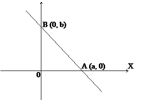
The two points form of the equation is given by = 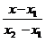
Substituting (a, 0) for (x1,y1) and (0, b) for (x2, y2), we get the equation as
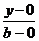 = 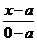
ie =
 = -
= -
Thus, = + 1
\ + = 1
Hence, the equation of a line having x-intercept ‘a’ and y-intercept ‘b’ is given by
+ = 1
Example: Find the intercepts cut off by the line 2x – 3y + 5 = 0 on the axes.
Solution
x – intercept: put y = 0
\2x + 5 = 0
x = This is the x – intercept
y – intercept: Put x = 0
-3y + 5 = 0
\y = This is the y – intercept
Example : Give the mathematical equation of the supply function of a commodity such that the quantity supplied is zero when the price is Rs.5 or below and it increase continuously at the constant rate of 10 units for each one rupee rise in price above Rs.5.
Solution
A(0,5) B(10,6) C(20,7)
Point B is (10,6)
Point C is (20,7)
Equation of straight line joining two points is  =
=
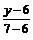= 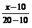
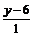=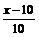
10 (y-6) = x –10
10y-60 = x-10
x -10y - 50=0
Note
The four equations we have obtained are all first degree equations in x and y. On the other hand it can be shown that the general first degree equation in x and y always represents a straight line. Hence we can take general equation of a straight line as ax + by + c = 0 with at least one of a or b different from c. Further, this gives by = - ax – c
i.e. y = 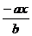 -
Now, comparing this with the equation y = mx + c, we get
slope = m =  = -
= -
| Download this lecture as PDF here |